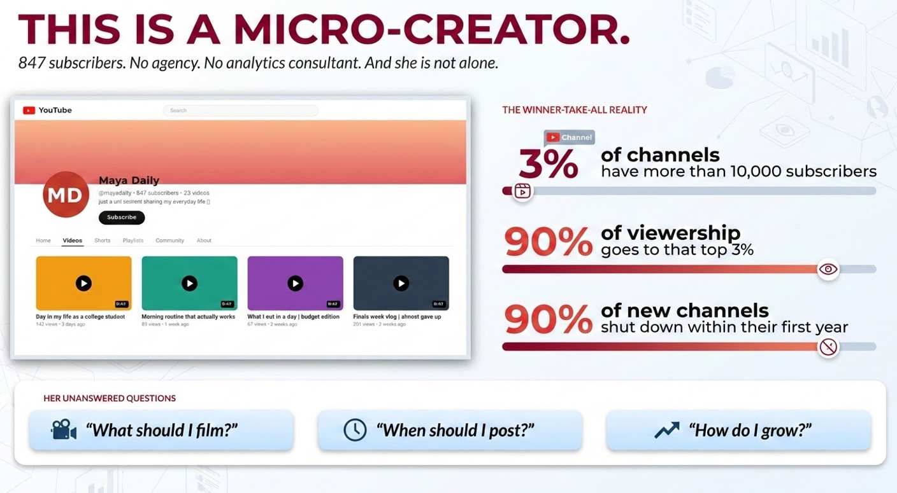

NLP · K-Means Clustering · LDA Topic Modeling
A data-driven playbook for new YouTubers — clustering 4 creator archetypes, surfacing content gaps with NLP, and revealing what actually drives engagement for micro-channels with small but loyal audiences.

Creator archetype dashboard — 4 K-Means clusters with topic + sentiment fingerprints
Goal
Most YouTube growth advice is anecdote, not analysis. This project clusters real creator data to answer the question new YouTubers actually need answered: which strategies actually work — and which bucket should you play in?
Problem & solution
⚠ The Problem
New YouTubers get the same generic advice: post consistently, use hashtags, find your niche. But these recommendations come from gut feel — not from analyzing what actually separates breakout micro-channels from stagnant ones.
💡 The Solution
A creator-strategy pipeline that segments YouTubers into 4 archetypes via K-Means, runs an NLP analysis (VADER + distinctive bigrams + LDA) on titles / descriptions / comments, and surfaces the language and topic strategies that actually drive engagement.
4 Creator archetypes (K-Means)
Viral Elite
Efficiency-driven
Optimized for instant algorithm velocity — short, sharp content engineered for early CTR and shares.
Avg subs: 83K
Community Builders
Loyalty-driven
Optimized for deep audience engagement — high like-rate, comment depth, returning viewers over raw reach.
Avg subs: 391
Authority Archives
Asset-driven
Optimized for long-term brand equity — evergreen content, watch duration, and search-driven discovery.
Avg subs: 2.5M
Rising Stars
Growth-driven
The transition phase for new entrants — pivoting from efficiency to loyalty as the channel scales.
Avg subs: 756K
The 3-phase growth roadmap
Phase 1 · Survival — master Efficiency
Get into the algorithm. Optimize for early CTR and view-velocity. Short, sharp content with strong identity tags.
Phase 2 · Loyalty — pivot to Like Rate
Build a community. Use warm, identity-specific language and emotional resonance — High creators score 0.419 VADER vs 0.327 for Low.
Phase 3 · Authority — shift to Duration
Secure a market moat. Lean into watch-time depth, evergreen content, and a clear vertical brand.
Find your Blue Ocean niche
Pivot away from saturated "People & Blogs" toward high-leverage categories — high audience demand, low creator competition.
→ From generic "vlogger" to identity-specific creator with a measurable edge
Key features · NLP analysis pipeline
✓ NLP
VADER Sentiment Analysis
0.419 vs 0.327
Scored on raw text to preserve !, ?, CAPS signals. High-engagement creators produce significantly warmer content — 33% strongly positive vs 23% for Low (compound > 0.8).
⚡ Bigrams
Distinctive Language Mining
TF-difference ranking
Custom stopword removal strips platform noise. Reveals identity-specific vocabulary (jee, haridwar, shayari, assamese) that High creators use vs generic terms (food, aesthetic, cleaning) that Low creators rely on.
✓ LDA
Topic Saturation Modeling
5 topics per group
sklearn LDA with entropy + max-share metrics. Low group's Topic 1 dominates at 39% — 46% more topic-concentrated than High group, exposing the saturation trap.
Results
Identity language + emotional warmth + topic diversification are the measurable drivers of micro-creator engagement. High creators use hyper-specific vocabulary (JEE/IIT, Assamese culture, Haridwar/Ganga, shayari); Low creators rely on generic terms (food, aesthetic, cleaning) and collapse into a single dominant topic.
Impact & outcome
How it works — technical overview
Ingestion
YouTube Data API
Channels, videos, titles, descriptions, comments · creator-level features for clustering
Segmentation
K-Means Clustering
4 creator archetypes by efficiency / loyalty / authority / growth signals
NLP Pipeline
VADER + Bigrams + LDA
Custom stopwords · sentiment on raw text · distinctive vocabulary · 5-topic LDA per group
Output ✦
Creator Playbook
3-phase roadmap · 4 content-gap insights · tag strategy recommendations
| Method | Signal | Key finding |
|---|---|---|
| K-Means | Creator-level features | 4 archetypes: Viral Elite, Community Builders, Authority Archives, Rising Stars |
| VADER Sentiment | Compound score on raw text | High 0.419 vs Low 0.327 — warmer language wins |
| Distinctive Bigrams | Positive comment vocabulary | Identity tags (jee, haridwar, shayari) outperform generic tags (food, aesthetic) |
| LDA Topic Modeling | 5 topics per group on titles + descriptions | Low group 46% more topic-concentrated — saturation trap exposed |
Tech stack
Links